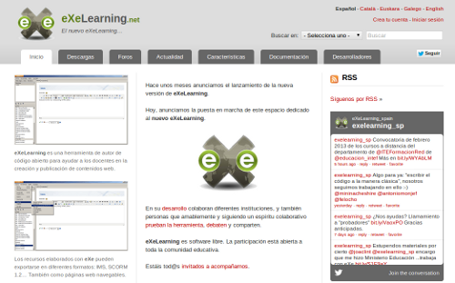
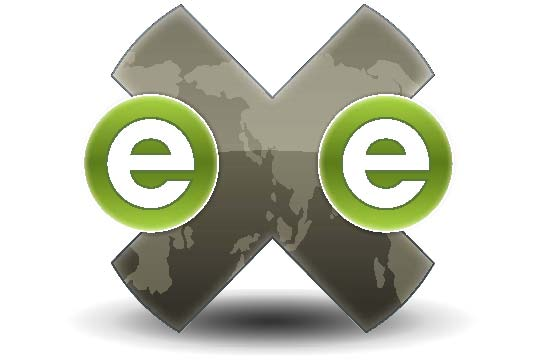

एवं


Virtual labs are very powerful tools of ICT to enhance practical skills. One of the very important and integral parts of virtual labs is computer simulation. Simulations are programs which reproduce the behavior of the abstract system using computer models. Therefore, one has to be expert in such computer programming languages to develop such simulations.
Usually, Science teachers are good in developing mathematical models for the system at a very high level of abstraction but not in developing computer models. There is a solution for this problem. It is computer software, Easy Java (Java script) simulations.
Easy Java Simulations (EJS) is free open-source software which provides an interface to science teachers or learners to design interactive Java simulations for physical systems without the necessity of prior knowledge of computer programming languages. It also facilitates the user to change or write the already developed Java simulations. EJS models can also run as an applet in HTML pages. It can be distributed from a digital library to learners.
Easy Java Simulations (EJS) software is free open-source software. It can be downloaded from the following link:
Easy Java Simulations (EJS) software as well as Java simulations can only run on those computers which have “Java Runtime Environment (JRE) 1.7 or later. It can be downloaded from the following link:
http://java.sun.com/javase/downloads/
We have developed many Java simulations by using the Easy Java Simulation toolkit. Following are some of the Java simulations developed by EJS: